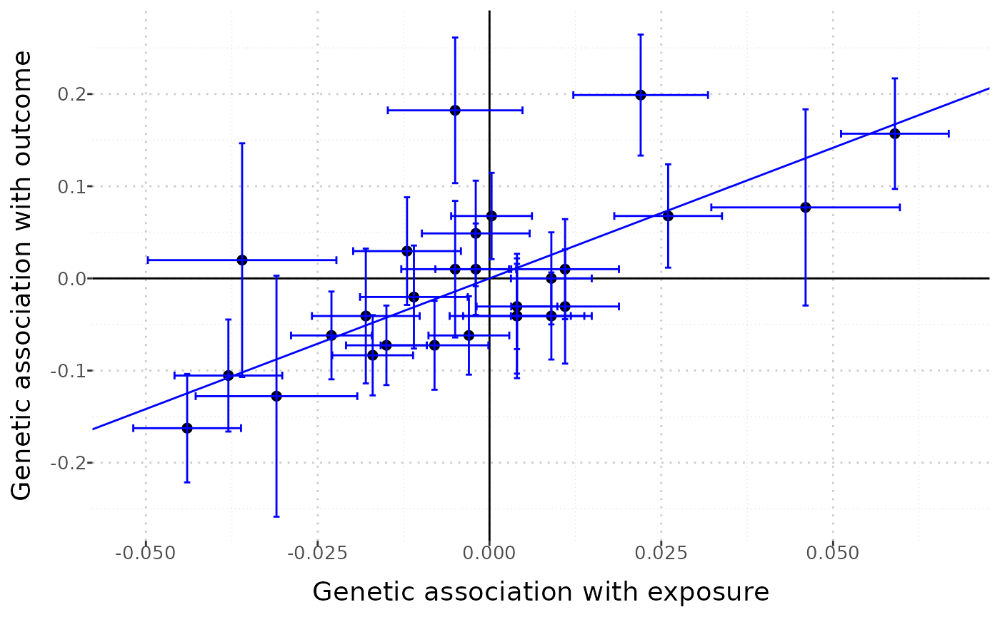
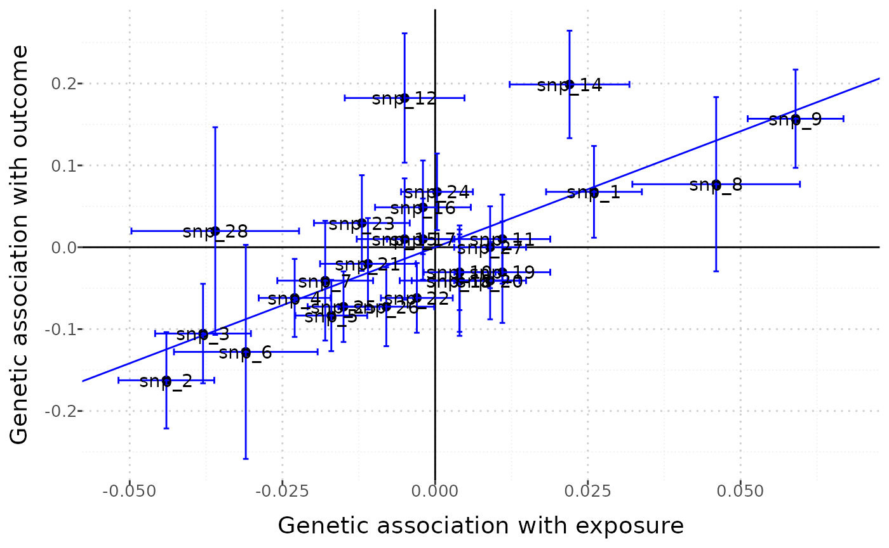
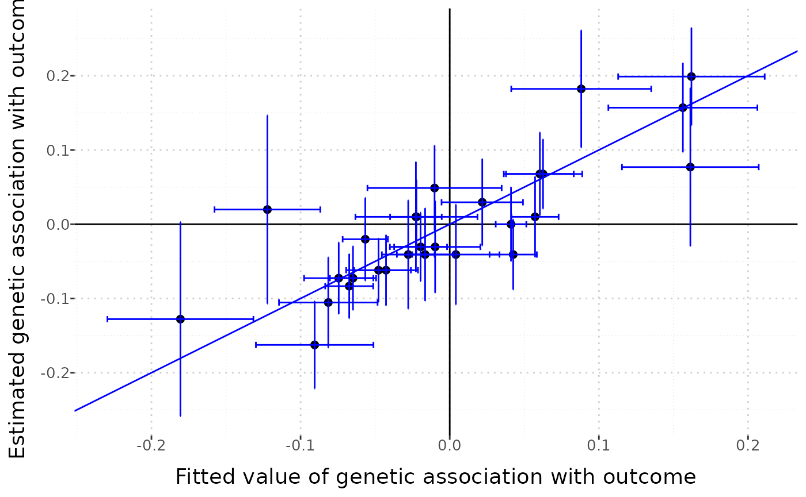
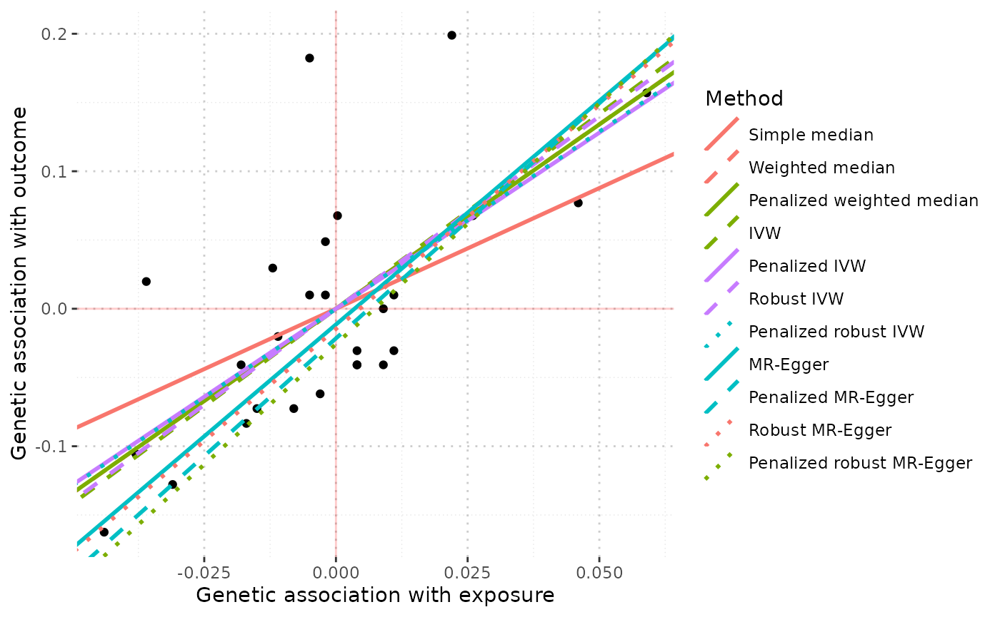
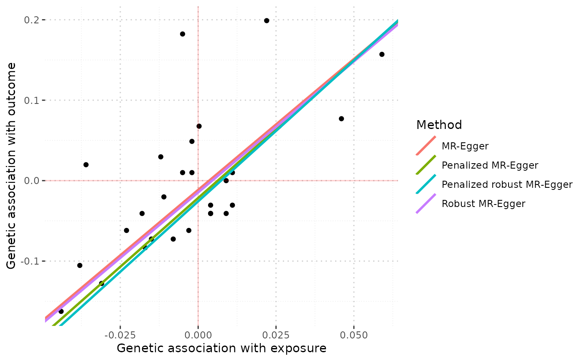
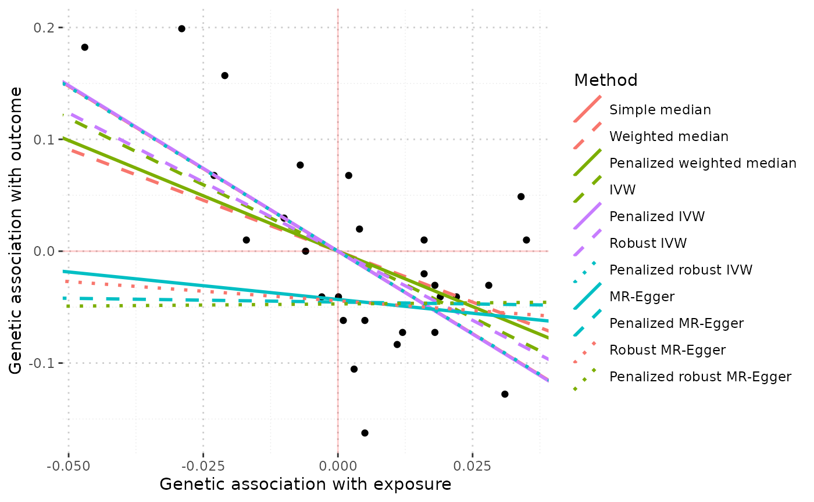
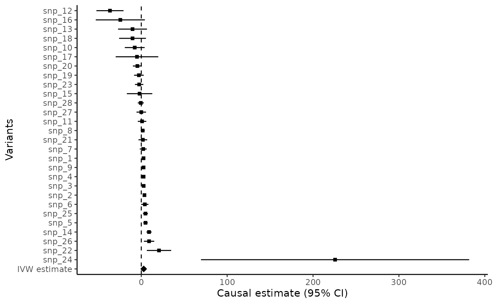
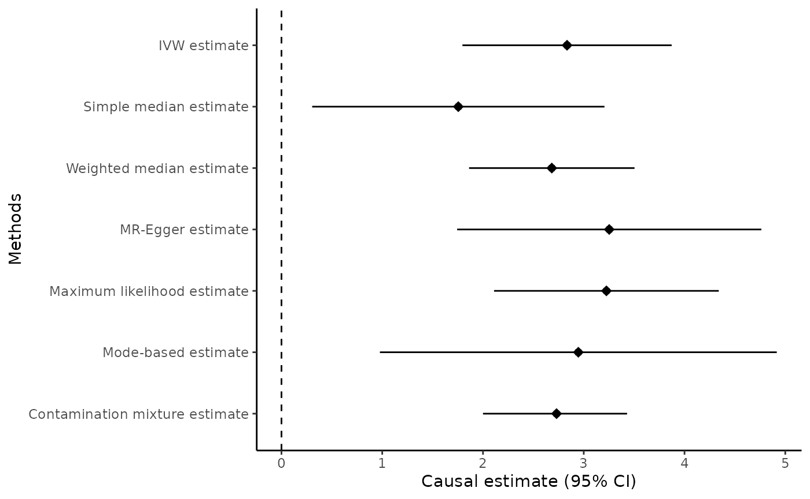
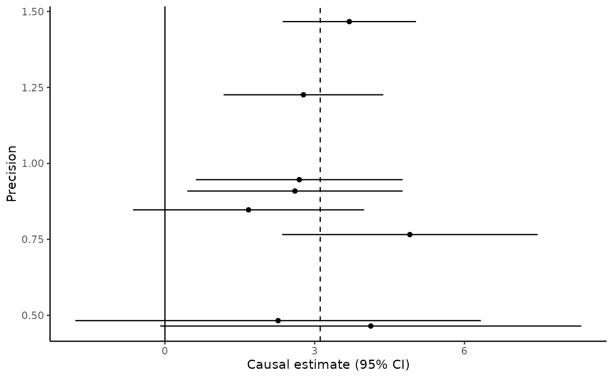
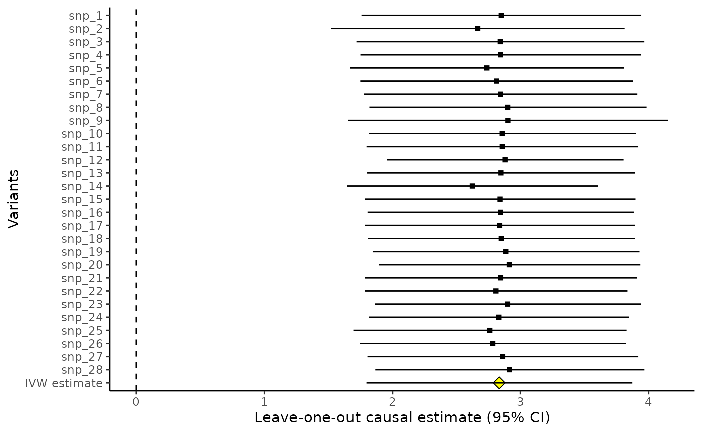

MRInput Object: display the data
The mr_plot function has two different functionalities. First, if the function is applied to an MRInput object, then the output is an interactive graph that can be used to explore the associations of the different genetic variants and look for outliers, which may represent pleiotropic variants.
The syntax is:
mr_plot(mr_input(bx = ldlc, bxse = ldlcse, by = chdlodds, byse = chdloddsse),
error = TRUE, orientate = FALSE, line = "ivw")An interactive graph does not reproduce well in a vignette, so we encourage readers to input this code for themselves. The interactive graph allows the user to pinpoint outliers easily; when the user mouses over one of the points, the name of the variant is shown.
The option error = TRUE plots error bars (95% confidence intervals) for the associations with the exposure and with the outcome. The option orientate = TRUE sets all the associations with the exposure to be positive, and re-orientates the associations with the outcome if needed. This option is encouraged for the MR-Egger method (as otherwise points having negative associations with the exposure can appear to be far from the regression line), although by default it is set to FALSE. The line option can be set to “ivw” (to show the inverse-variance weighted estimate) or to “egger” (to show the MR-Egger estimate).
A static version of this graph is also available, by setting interactive = FALSE:
mr_plot(mr_input(bx = ldlc, bxse = ldlcse, by = chdlodds, byse = chdloddsse),
error = TRUE, orientate = FALSE, line = "ivw", interactive = FALSE)
This version of the graph is less useful for detecting outliers, but easier to save as a file and share with colleagues.
Outliers can be identified using the labels = TRUE option:
mr_plot(mr_input(bx = ldlc, bxse = ldlcse, by = chdlodds, byse = chdloddsse),
error = TRUE, orientate = FALSE, line = "ivw", interactive = FALSE, labels = TRUE)
The resulting graph is quite ugly, but it is easy to identify the individual points.
MRMVInput object: display the data
The mr_plot command can also be applied to an MRMVInput object created using the mr_mvinput() function. In this case, the horizontal axis does not present the associations with any single exposure, but the fitted value from the multivariable IVW method, representing the expected genetic association with the outcome based on the genetic associations with the exposures.
MVMRInputObject <- mr_mvinput(bx = cbind(ldlc, hdlc, trig),
bxse = cbind(ldlcse, hdlcse, trigse),
by = chdlodds,
byse = chdloddsse)
mr_plot(MVMRInputObject, interactive = FALSE)
MRAll object - comparison of estimates
Finally, if the mr_plot function is applied to the output of the mr_allmethods function, estimates from the different methods can be compared graphically.
MRInputObject <- mr_input(bx = ldlc,
bxse = ldlcse,
by = chdlodds,
byse = chdloddsse) #put data into MR input format
MRAllObject_all <- mr_allmethods(MRInputObject, method = "all") #apply all MR methods
mr_plot(MRAllObject_all) # create plot
MRAllObject_egger <- mr_allmethods(MRInputObject, method = "egger")
mr_plot(MRAllObject_egger)
mr_plot(mr_allmethods(mr_input(bx = hdlc, bxse = hdlcse,
by = chdlodds, byse = chdloddsse)))
We see that estimates from all methods are similar when LDL-cholesterol is the risk factor, but the MR-Egger estimates differ substantially when HDL-cholesterol is the risk factor.
Other graphical functions
Other graphical functions are the mr_forest command, which can either provide a forest plot of the variant-specific estimates:
mr_forest(MRInputObject, ordered=TRUE)
Or the comparison of various estimates from different methods:
mr_forest(MRInputObject,
methods = c("ivw", "median", "wmedian", "egger", "maxlik", "mbe", "conmix"),
snp_estimates = FALSE)
The mr_funnel command, which provides a funnel plot of the variant-specific estimates against their precision (that is, the reciprocal of the standard error):

(Note we only plot the first 8 variants here)
And the mr_loo command, which provides the leave-one-out estimates - that is, the estimate based on all variants except variant 1, then the based on all variants except variant 2, and so on.
mr_loo(MRInputObject)
These plots are all ggplot objects, and so can be edited using commands from the ggplot2 package. For example, to set the x-axis to run from -5 to +5: